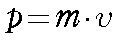
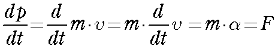
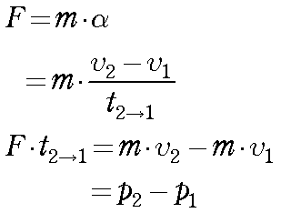

さて，力学でなじみの深い単語に，運動量，と言う言葉があります．
これは，運動方程式とどう関連があるのでしょう？
運動量は，以下の式で表します．

ｐ：運動量 [kg.m/s]
ｖ：速度 [m/s]
運動量とは運動の勢いを量として表したもので，式の通りに，重いものほど，速度が高いものほど大いい，となります．
この運動量，と言うものは保存します．
ビリヤードを思い浮かべてみると，わかりやすいです．
打ったボールが別のボールにぶつかると，これら二つのボールは別の方向に進みます（たまには同じ方向ですが）．そのときのそれぞれの運動量の和は最初のボールの運動量に等しくなります．
また，速度の微分（時間変化）が加速度となるので，

となり，運動量の微分が力となります．
また，質量，ｍ，の物体に力，F，をある時間，ｔ，加えると，

となります．
つまり，運動量の変化（ｐ１からｐ２）は力と時間の積に等しいこととなります．
この，力と時間の積のことを，力積，と呼びます．
次は，ヤング率について説明しましょう．